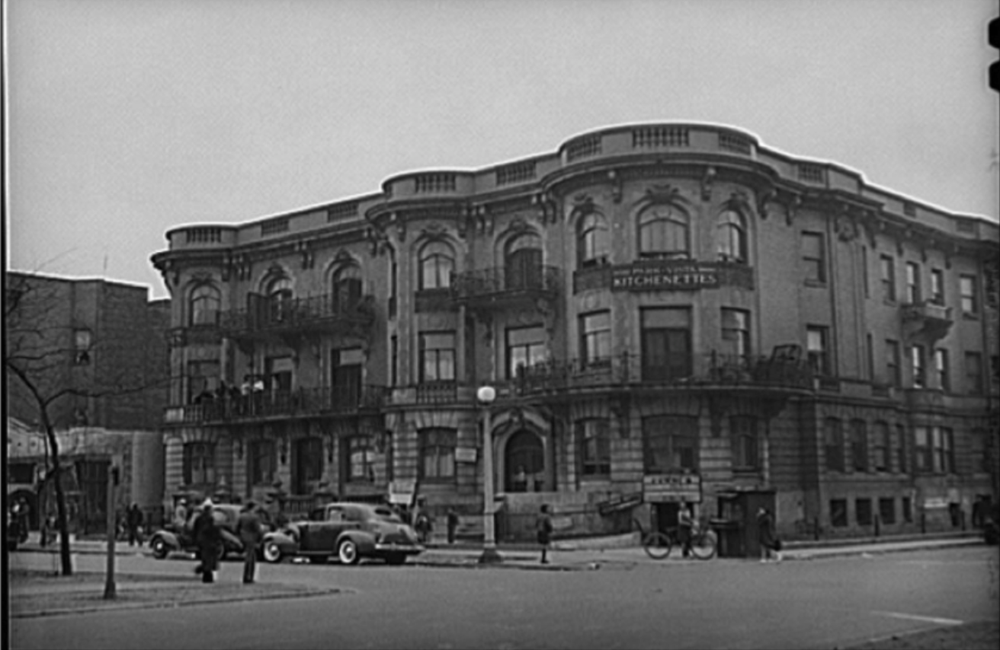
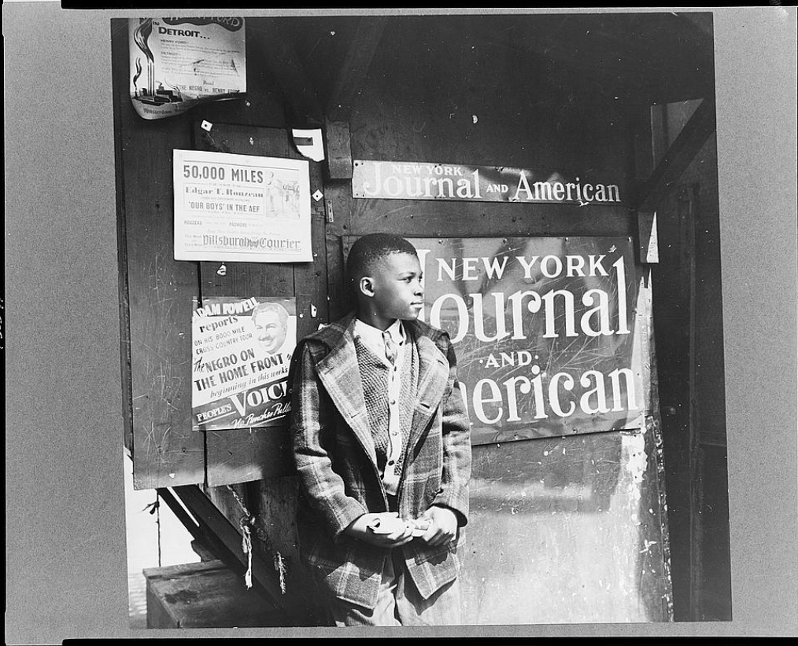
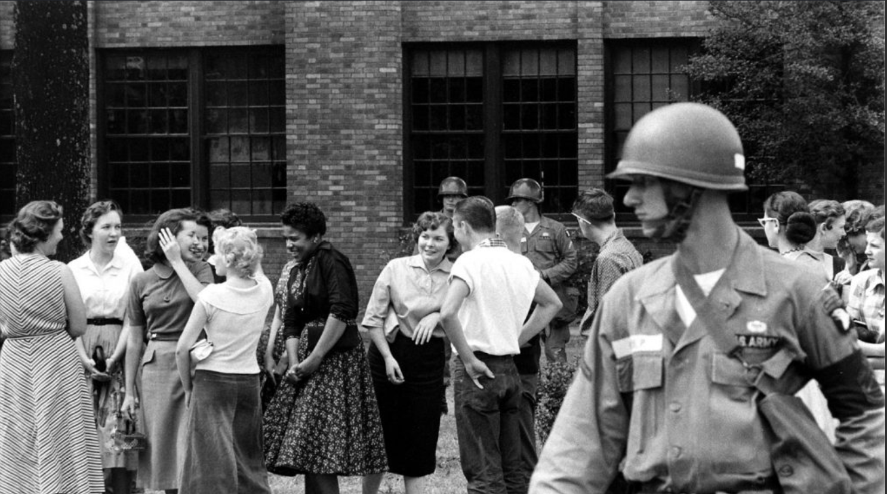

A tribute to African American literature · Norton Anthology, Vol. 2
Realism, Naturalism, & Modernism
1940 — 1960
Between the end of the Harlem Renaissance and the rise of the Black Arts
Movement, a generation of writers turned American literature into a
courtroom. Richard Wright, Ralph Ellison, Gwendolyn Brooks and James
Baldwin put segregation, poverty and the psychology of racism on trial
and they did it in the pages of bestsellers, prize winning poems and
essays the whole country was forced to read.
The Era at a Glance
What makes 1940–1960 different
The Harlem Renaissance of the 1920s celebrated Black culture for an
audience of patrons and admirers; much of its energy went into proving
that Black artistry existed at all. The Great Depression ended that
patronage system and the writers who came of age in the 1930s and
1940s many of them children of the Great Migration, raised in the
kitchenettes of Chicago's South Side and the tenements of Harlem had
a different project. They wrote to indict. Their subject was not the
cabaret but the slum, the courtroom, the factory floor and the
segregated army and their tone was harder, angrier and more direct
than anything the Renaissance had produced.
The era is also distinct in how it ended arguments about whether Black
writers belonged in the American mainstream: a Pulitzer Prize (Brooks,
1950), a National Book Award (Ellison, 1953) and national bestsellers
(Wright, 1940 and 1945) settled the question. And unlike the Black
Arts Movement that followed which called for art by, for and about
Black people on separatist terms these writers largely fought to
claim the entire Western tradition, from Dostoevsky to T. S. Eliot,
as their inheritance.
Characteristic 01 · Naturalism
Environment on Trial
Following literary naturalists like Theodore Dreiser, these writers
showed characters shaped and sometimes destroyed by forces
beyond their control: segregation, poverty and the ghetto itself.
Wright's Bigger Thomas is the era's defining example: the novel asks
whether America built the very crime it punishes him for.
Characteristic 02 · Protest
Literature as Indictment
This is the age of the "protest novel," written to confront white
readers with the cost of racism. The era even argued with itself:
Baldwin's essay "Everybody's Protest Novel" (1949) accused Wright's
fiction of reducing people to sociology a family quarrel that
shaped the period as much as any single book.
Characteristic 03 · Modernism
Experimental Form, Jazz Feeling
Ellison borrowed the fragmented, symbol heavy techniques of Eliot
and Joyce and tuned them to the improvisation of bebop; Brooks
poured Black vernacular life into sonnets and ballads. High modernist
craft became a tool for describing Black experience with new
precision.
Characteristic 04 · The Wider World
Migration & Exile
The literature is urban because its writers were migrants from
Mississippi to Chicago, from Oklahoma to Harlem. Several kept going:
Wright (1946) and Baldwin (1948) moved to Paris, judging American
racism from across the Atlantic just as the Cold War made that
judgment sting.
Four Writers
Biographies · ~200 words each
Richard Wright, 1939. Photo: Carl Van Vechten, Library of Congress (public domain), via Wikimedia Commons.
Richard Wright
1908–1960 · Novelist, memoirist · Natchez, Miss. → Chicago → Paris
Born on a plantation near Natchez, Mississippi, Richard Wright
survived a childhood of hunger, violence and Jim Crow humiliation
that he later recorded in his autobiography Black Boy
(1945). He joined the Great Migration north to Memphis and then
Chicago, educated himself in public libraries (borrowing a white
co-worker's card to do it) and briefly found a political home in
the Communist Party before breaking with it publicly.
His novel Native Son (1940) made him the most famous
Black writer in America and the father of the protest novel. Its
antihero, Bigger Thomas a terrified, rage filled young man from
a South Side slum who kills his white employer's daughter was
designed to be impossible to pity comfortably. Wright wanted
readers to see Bigger as the product of the airless world America
had built for him. The book became the first novel by a Black
author chosen by the Book of the Month Club and sold hundreds of
thousands of copies. Exhausted by American racism, Wright moved
permanently to Paris in 1946, where he mentored a young James
Baldwin and later absorbed Baldwin's sharpest criticism. He died
there in 1960.
Ralph Ellison. Photo: U.S. Information Agency (public domain), via Wikimedia Commons.
Ralph Ellison grew up in Oklahoma City dreaming of being a
composer, and studied music at Tuskegee Institute before a summer
trip to New York in 1936 changed his life: he met Richard Wright,
who pushed him to write. Jazz never left his work he thought of
the novelist the way he thought of a bebop soloist, improvising
new identity out of tradition.
His single completed novel, Invisible Man (1952), opens
with one of the most famous first lines in American literature
"I am an invisible man" and follows an unnamed Black narrator
from a nightmarish "battle royal" in the South, through a
Tuskegee like college, to Harlem, where a political organization
called the Brotherhood tries to turn him into a symbol.
Invisibility, for Ellison, meant that white America refused to see
Black individuality at all. The novel fused naturalist protest
with surrealism, folklore and modernist symbolism and won the
National Book Award in 1953, making Ellison the first African
American to receive it. He spent the next forty years on a second
novel he never finished and became one of the country's great
essayists in collections like Shadow and Act.
Gwendolyn Brooks in later life. Photo: John Mathew Smith / celebrity-photos.com, CC BY-SA 2.0, via Wikimedia Commons. (For a 1940s–50s image, search the Library of Congress catalog and swap it in.)
Gwendolyn Brooks
1917–2000 · Poet, novelist · Topeka, Kan. → Bronzeville, Chicago
Gwendolyn Brooks was raised in Bronzeville, the Black neighborhood
on Chicago's South Side and she made its residents tenants of
cramped kitchenette apartments, beauticians, preachers, soldiers,
teenage pool players the permanent subject of her poetry. Her
first collection, A Street in Bronzeville (1945), found
heroism and heartbreak in lives most of America refused to notice,
and her verse novel Annie Allen (1949), which traces a
Black girl's passage into womanhood, won the 1950 Pulitzer Prize
making Brooks the first African American ever to win a Pulitzer in
any category.
Her genius was fusing strict traditional forms sonnets, ballads,
tight rhyme with the speech and rhythms of the Black urban
street. Her most anthologized poem, "We Real Cool" (1960),
compresses the whole fate of seven pool players at the Golden
Shovel into eight brief, syncopated lines. In The Bean
Eaters (1960) she answered the headlines directly, with poems
responding to the murder of Emmett Till and the integration of
Little Rock. She later became Poet Laureate of Illinois and a
bridge to the Black Arts generation that followed her.
James Baldwin, 1955. Photo: Carl Van Vechten, Library of Congress (no known restrictions), via Wikimedia Commons.
James Baldwin
1924–1987 · Novelist, essayist · Harlem → Greenwich Village → Paris
James Baldwin grew up the eldest of nine children in Harlem, the
stepson of a harsh storefront preacher and spent three teenage years as a preacher
himself an apprenticeship you can hear in the pulpit cadence of every sentence he
wrote. In 1948, with about forty dollars he fled American racism for Paris where he could examine his country
from a distance.
He announced himself by taking on his own mentor: the essay
"Everybody's Protest Novel" (1949) argued that protest fiction
like Wright's Native Son flattened human beings into
categories, insisting that literature owed Black people their full
complexity. His autobiographical first novel, Go Tell It on
the Mountain (1953), gives that complexity to John Grimes, a
fourteen year old wrestling with God, his father and himself over
one day in a Harlem church. Notes of a Native Son (1955)
established him as perhaps the finest American essayist of the
century, and Giovanni's Room (1956) a love story
between two men, published at enormous personal risk showed a
moral courage that anticipated battles the country had not yet
begun to fight. He became a leading witness of the Civil Rights
era.
The Era in Pictures
A montage, 1940–1960
Gordon Parks, "American Gothic" government charwoman Ella Watson, Washington, D.C., 1942. FSA/OWI, Library of Congress (public domain), via Wikimedia Commons.

Kitchenette apartments on South Parkway, Bronzeville, 1941 the housing at the center of Brooks's poems and Wright's fiction. Tuskegee Airmen, c. 1942–43 the segregated military that the Double V campaign protested. U.S. Army Air Forces (public domain), via Wikimedia Commons.

The Harlem of Invisible Man and Go Tell It on the MountainRosa Parks fingerprinted after her February 1956 arrest during the Montgomery Bus Boycott. Via Wikimedia Commons (public domain in the U.S.).

Federal troops escort nine students into Central High, 1957.
Timeline
Books Lit and events, side by side
1940
Native Son is published Lit
Wright's novel becomes a national bestseller and the first Book of the Month Club selection by a Black author.
1941
Executive Order 8802
A. Philip Randolph's threatened March on Washington pushes President Roosevelt to ban discrimination in defense industries a preview of mass movement tactics to come.
1942
The Double V Campaign
The Pittsburgh Courier launches "Double Victory" over fascism abroad and racism at home. The Congress of Racial Equality (CORE) is founded in Chicago.
1945
Black Boy · A Street in Bronzeville Lit
Wright's memoir and Brooks's debut collection appear as WWII ends and Black veterans come home determined not to return to second class citizenship.
1947
Jackie Robinson breaks the color line
Robinson debuts for the Brooklyn Dodgers, integrating Major League Baseball before the armed forces or the schools.
1948
Executive Order 9981
President Truman orders the desegregation of the U.S. military. The same year, a 24 year old James Baldwin leaves for Paris.
1950
Brooks wins the Pulitzer Prize Lit
For Annie Allen the first Pulitzer awarded to an African American. Diplomat Ralph Bunche wins the Nobel Peace Prize the same year.
1952
Invisible Man is published Lit
Ellison's only completed novel appears; it wins the National Book Award the following year.
1953
Go Tell It on the Mountain Lit
Baldwin's first novel is published; two years later, Notes of a Native Son collects the essays that made his reputation.
1954
Brown v. Board of Education
The Supreme Court rules school segregation unconstitutional, overturning "separate but equal."
1955
Emmett Till · Montgomery begins
The murder of 14 year old Emmett Till in Mississippi shocks the nation in August; in December, Rosa Parks's arrest launches the Montgomery Bus Boycott. Brooks would answer Till's death in verse.
1957
Little Rock Nine
Federal troops escort nine Black students into Central High School; Congress passes the first Civil Rights Act since Reconstruction; Dr. King helps found the SCLC.
1959
A Raisin in the Sun Lit
Lorraine Hansberry becomes the first Black woman to have a play produced on Broadway its title taken from a Langston Hughes poem about deferred dreams.
1960
Sit-ins · The Bean Eaters · Wright dies Lit
The Greensboro sit ins open the student phase of the movement; Brooks publishes The Bean Eaters; Richard Wright dies in Paris at 52. The era closes as a new, more militant decade begins.